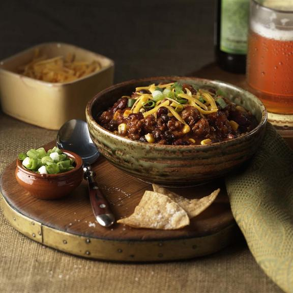

While chili snobs will argue over what true chili really is, you'll be enjoying this amazing recipe.
Beer and Sausage chili
Ingredients
- 2 (19 ounce) packages Johnsonville Hot or Mild Italian sausage links
- 1 large onion, diced
- 3 garlic gloves, minced
- 1 tablespoon chili powder, or more to taste
- 1/4 teaspoon cumin
- 12 ounces beer (or beef stock)
- 1 (28 ounce) can crushed tomatoes
- 2 tablespoons tomato paste
- 1 (16 ounce) can red kidney beans, drained and rinsed
- 1 1/2 cups fresh or frozen whole kernel corn
- Salt and pepper to taste
Instructions
- Step One
- In a soup kettle or Dutch oven, cook sausage over medium heat until no longer pink and lightly browned. Add onions and garlic; continue to cook and stir until tender.
- Step Two
- Stir in beer and allow to simmer for 5 minutes. Add tomatoes and tomato paste, cook uncovered for 8 to 10 minutes. Stir in remaining ingredients and heat through. Salt and pepper to taste. Serve.
Recipe and photo taken from allrecipes.com
Back to homepage